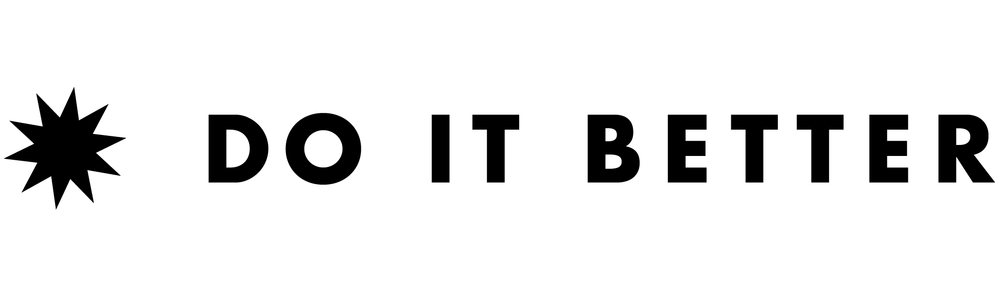

Reunion
2026.09.14 — Chicago — 4–9pm
Get Updates
✕
Get Updates
Drop your name and email — we'll send reunion details as they come together.
Submit
Organized by
colere

Contact
nicolette@doitbetterdesign.com